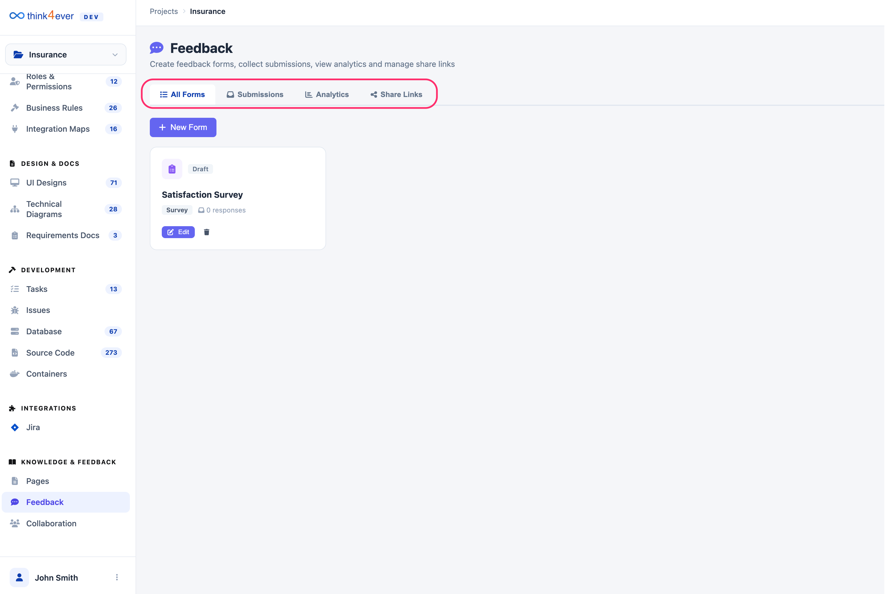
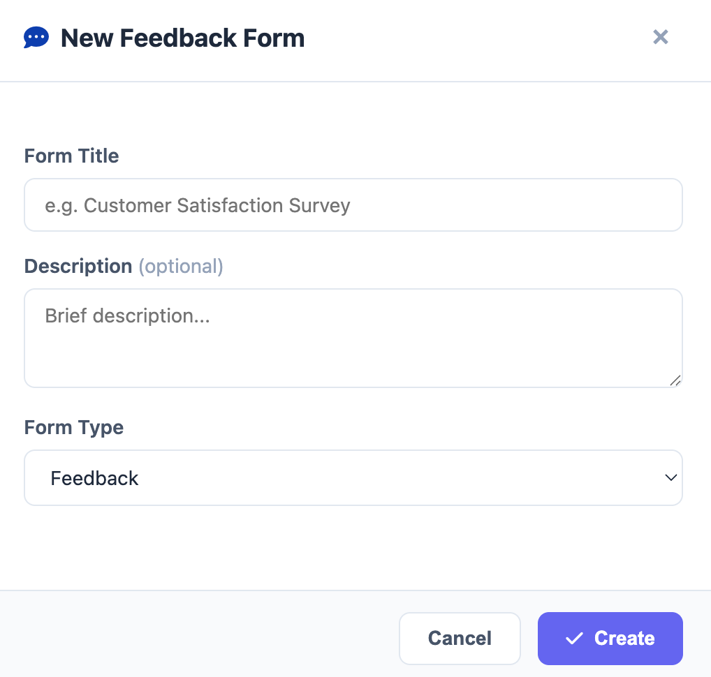

Feedback
The Feedback module is a specialized tool for gathering qualitative data from users, stakeholders, and team members. It allows you to create custom forms, collect structured responses, and analyze sentiment to drive project improvements.
The Feedback dashboard is organized into four main tabs to help you manage the entire lifecycle of a submission:
- Centralized Input: Instead of scattered emails or chat messages, feedback is logged here as specific entries.
- Actionable Insights: Feedback can be triaged and converted directly into Issues (Bugs or Features) if the input requires a technical change.
- Sentiment Tracking: Helps project managers gauge the "health" of a feature based on user and team reactions.
- All Forms: A central repository of every feedback form created for the project.
- Submissions: View and manage the individual responses collected from your active forms.
- Analytics: Access visual data and trends to understand overall user satisfaction and common themes.
- Share Links: Manage the URLs used to distribute your forms to external stakeholders or internal teams.

Creating a Feedback Form
To start collecting data, click either the + New Form button or the + Create Form button in the center of the dashboard. This opens the New Feedback Form configuration modal.
Form Details
- Form Title: Enter a clear name for your form (e.g., "Post-Alpha UI Survey").
- Description (Optional): Provide context or instructions for the respondents to explain the purpose of the feedback.

Form Types
Choosing the correct Form Type ensures the data is categorized properly for your analytics. Available types include:
- Feedback: General input regarding the project or specific features.
- Survey: Structured questions for broader data collection.
- Poll: Quick, single-question votes for rapid decision-making.
- NPS (Net Promoter Score): A specific metric used to measure user loyalty and the likelihood of recommendation.
- Bug Report: A streamlined form for users to report technical glitches.
- Feature Request: Allows stakeholders to suggest new functionality.
- General: A flexible format for any input that doesn't fit the above categories.
Collecting and Analyzing Data
Once a form is created and shared:
- Monitor Submissions: Check the Submissions tab regularly to see new entries in real-time.
- Evaluate Trends: Use the Analytics tab to identify recurring issues or highly requested features.
- Bridge to Development: High-priority items identified in Feedback can be manually transitioned into the Issues module for technical resolution.